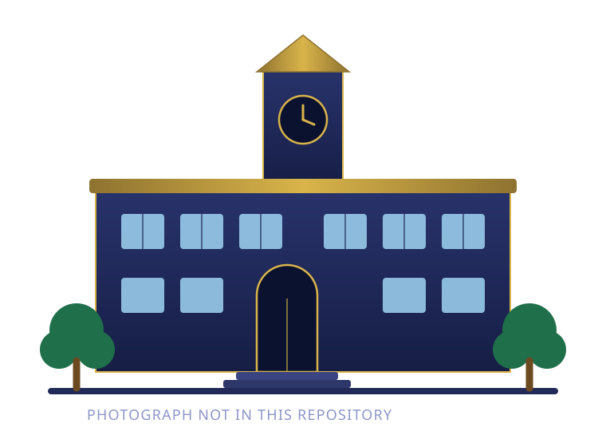

Kadambur English Medium School is a co-educational institution in Kadambur, Kannur — where academic excellence and genuine care grow side by side.
For twenty-five years we've offered a nurturing, inclusive environment for students from pre-primary to Grade 10. Our approach blends a strong English-medium academic foundation with modern, digital-enabled classrooms and a focus on values and holistic growth.
Small, attentive classes and dedicated teachers give every child the space to find their strengths — and the support to reach further.
